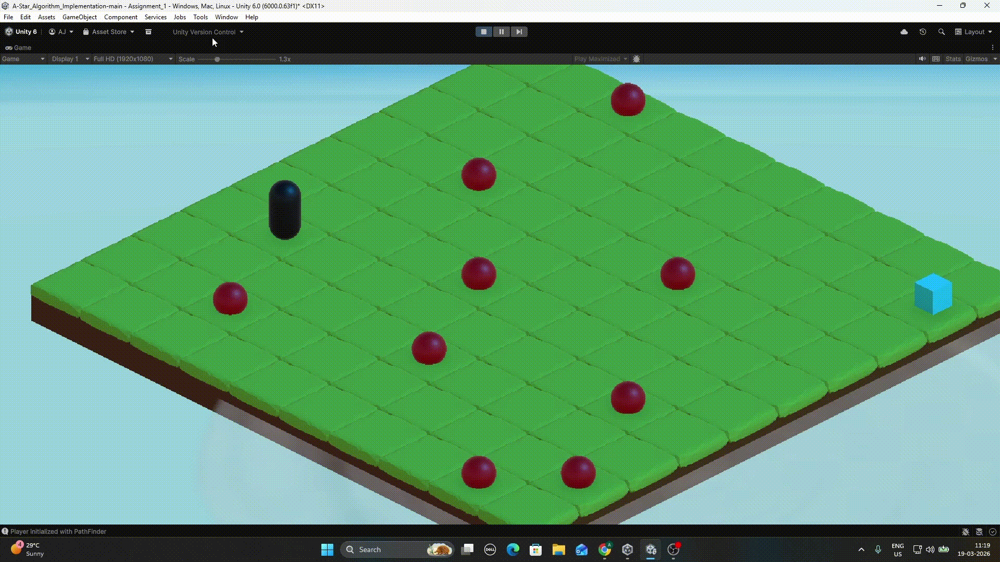
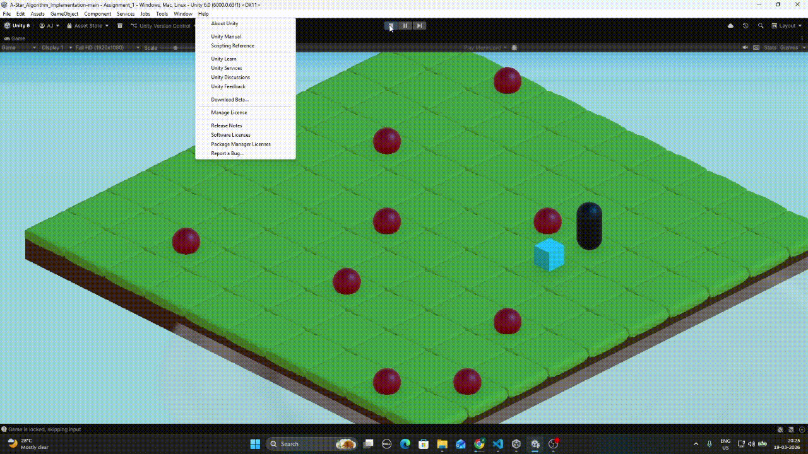

A turn-based tactical strategy prototype built entirely around from-scratch A* pathfinding no NavMesh, no Unity pathfinding APIs. The algorithm is the gameplay. Includes a custom Unity Editor tool so level designers can paint obstacles without writing a single line of code.



- Player clicks a destination then PathFinder routes around obstacles and occupied tiles, unit animates tile by tile, AI responds immediately after.
- GameLock static flag blocks all input during movement, prevents mid animation input and keeps turns feeling deliberate.
- No random timers. AI reacts the moment the player coroutine completes.
PathFinder is a plain C# class, fully decoupled from MonoBehaviour. No Unity lifecycle dependency. It can be unit tested, ported, or called from any context.
- FindPath() resets all node costs before each search, prevents stale g, h, f values from a previous search corrupting results.
- Open set List<Node> sorted by f cost. Closed set HashSet<Node> for O(1) membership checks.
- Path reconstructed by walking parent references from goal to start, then reversing.
Level designers can paint the grid without touching code. The entire workflow is visual.
- ObstacleData ScriptableObject stores a flat
bool[]array. Coordinate x,y to index via y times width plus x. Avoids jagged arrays, fully serializable. - ObstacleEditor (EditorWindow) renders a checkbox grid. Each checkbox equals one array index. Changes written via EditorUtility.SetDirty(), persists across play sessions and into version control.
- At runtime, ObstacleManager reads the same ScriptableObject and spawns visual prefabs at blocked positions. Zero data duplication between editor and runtime.
- Pre reservation pattern GridOccupant.Occupy() is called on the destination tile before the unit steps into it, prevents two units from targeting the same tile.
- HashSet<Vector2Int> occupancy for O(1) tile checks. PathFinder queries it during neighbour generation, so paths route around occupied tiles dynamically.
EnemyAI never polls in Update(). It subscribes to PlayerControl.OnPlayerMovedEvent static C# Action in OnEnable and unsubscribes in OnDisable.
- IAI interface with a single
TakeTurn()method, any AI behaviour can be swapped without touching the event wiring. - Satisfies the Open Closed Principle, the event system is closed for modification and open for new AI types.
When I was building this I kept thinking about where I'd seen this kind of movement before. Turns out A* is basically everywhere.
- StarCraft — this is probably the most famous example. Units pathfind around each other and the terrain using A* on a tile grid. The original game had a notorious bug where large groups of units would stack on top of each other because two units could claim the same destination tile at the same time. That's literally the pre-reservation problem I solved in this project.
- Age of Empires II — the pathfinding in this game is notoriously weird sometimes. Villagers taking a very long way around a wall, or getting stuck. That's A* running into edge cases with large groups. They patched it for years. The Definitive Edition finally fixed most of it.
- XCOM Enemy Unknown — same genre as what I built. Every soldier move on every turn is A* on a tile grid. You can almost feel it working when a soldier plots a route through a building.
- Into the Breach — really interesting one because the whole game is designed around making the pathfinding readable. You can see exactly where every enemy wants to go before they move. The 8x8 grid is tiny enough that A* is basically instant.
- Minecraft — every mob runs A* on the block grid to find you. You can watch it happen in real time. Put a wall between you and a zombie and it will walk around it. That's the algorithm. Villagers use it to navigate between buildings.
- The Sims — every Sim pathfinds through your house with A*. The red diamond you get when a Sim can't reach something? That's A* returning no path found. Happens when you accidentally wall a Sim into a room.
- Diablo II — monsters chasing you are running A*. The ones that get stuck on corners are failing to account for their own collision size when calculating the path, classic A* edge case.
It finds the shortest path, it's fast enough for real-time games on small to medium grids, and it's not that hard to implement. Most other approaches are either slower, less accurate, or much harder to write. Once you understand it you start seeing it in basically every game with moving characters.